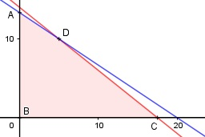

Aufgabe 74 Für Gardinen gibt es Stoffballen erster und zweiter Qualität. Der von erster Qualität liefert 20 m, der andere 25 m. Für die Verarbeitung von Ballen erster Qualität braucht man 18 h, für die anderen 27 h. In 360 Stunden sollen nicht mehr als 350 m verarbeitet werden. Sind 5 Ballen erster und 10 zweiter Qualität in dieser Zeit zu schaffen? x = Anzahl Ballen erster Qualität y = Anzahl Ballen zweiter Qualität Bedingungen: 1. x > 0 x ∈ ℕ 2. y > 0 y ∈ ℕ 3. 20x + 25y ≤ 350 4. 18x + 27y ≤ 360

Die Eckpunkte A, B C und D bilden das Planungs- gebiet, das alle Ungleichungen erfüllt. Eckpunkt A: Randgerade 1. geschnitten mit Randgerade 3. 20 * 0 + 25y = 350 |:25 y = 14 A(0|14) Eckpunkt B: Randgerade 3. geschnitten mit Randgerade 4. 20x + 25y = 350 |-20x 25y = 350 - 20x |:25 y = 14 - 0,8x Eingesetzt: 18x + 27 * (14 - 0,8x) = 360 18x + 378 - 21,6x = 360 |+3,6x - 360 18 = 3,6x |:3,5 x = 5 Eingesetzt: y = 14 - 0,8 * 5 y = 10 B(5|10) 5 Ballen erster und 10 Ballen zweiter Qualität sind in der angegebenen Zeit zu schaffen. Eckpunkt C: Randgerade 2. geschnitten mit Randgerade 3. 20x + 25 * 0 = 350 |:20 x = 17,5 ∉ ℕ C(17,5|0) Eckpunkt D: Randgerade 2. geschnitten mit Randgerade 4. 18x + 27 * 0 ≤ 360 |:18 x = 20 D(20|0) liegt nicht im Planungsgebiet.